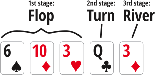
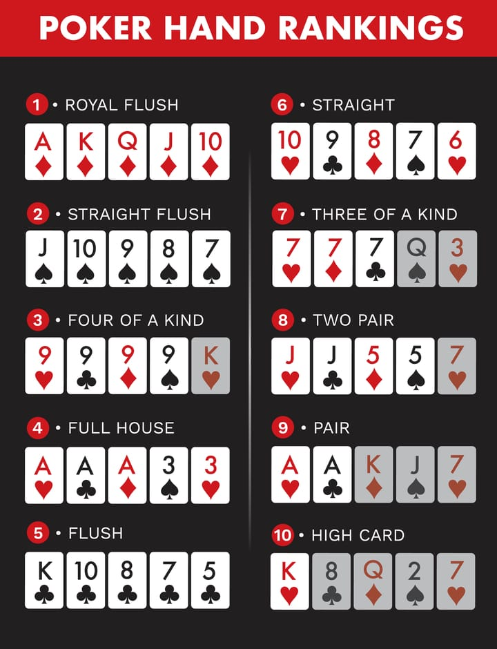

Wizard of Odds simulates poker hands and provides the probabilities of every possible outcome almost instantly.
In Poker, it is crucial to think about what your opponent have in the form of a range. A poker range is a collection of all the possible hands a player can have at a particular point in a hand.
With the help of the wizard of odds, you can select poker ranges of your opponent's and get the outcome probabilities to aid your decision-making.
The goal of a Poker game (Texas hold'em) is to use your hole cards and in combination with the community cards to make the best possible five-card poker hand.
Basic Key Rules:
- A game of Poker (Texas hold'em) feature several betting rounds.
- Players get two private (face down) and up to five community cards (face up in the middle of the table).
- The five community cards are dealt in three stages:

- Your mission is to construct your five-card poker hands using the best available five cards out of the seven total cards
(the two hole cards and the five community cards).
-
Unless all players abandon the game before the showdown, you need the highest poker hand to win.

If you knew your opponent's hand, then you would be able to make the perfect decision in every situation. Unfortunately, this is impossible as you will hardly ever be able to definitively put your opponent on one specific hand. Instead, you can rely on your knowledge, your experience and your observations to put your opponent on a number of possible hands. We call this collection of hands as "range".
Wizard of Odds provide the option to select from 3 basic ranges for your opponent:
- High Pairs: pair AA, KK, QQ, JJ, 1010
- Mid-low Pairs: pair 99, 88, 77, 66, 55, 44, 33, 22
- High Suited Connectors: AK, KQ, QJ, J10 in the same suit
To use this app
1. select your cards
2. select your opponent's cards
3. or you can use range mode to select ranges
4. select community cards
5. ask the wizard to calculate the odds